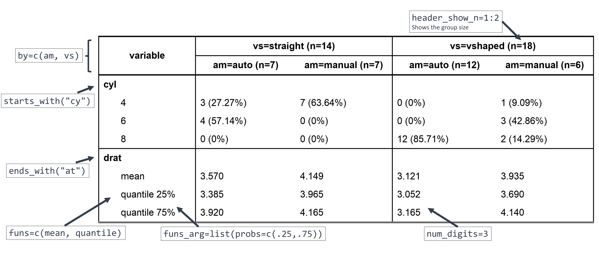

Crosstable is a package centered on a single function, crosstable, which easily computes descriptive statistics on datasets. It can use the tidyverse syntax and is interfaced with the package officer to create automatized reports.
Installation
# Install last version available on CRAN (v0.2.2)
install.packages("crosstable")
# Install development version on Github
devtools::install_github("DanChaltiel/crosstable", build_vignettes=TRUE)
# Install specific version (for reproducibility purpose)
devtools::install_github("DanChaltiel/crosstable@v0.2.2-CRAN", build_vignettes=TRUE) #last tag
devtools::install_github("DanChaltiel/crosstable@ff4aaae", build_vignettes=TRUE) #last commitNote that, for reproducibility purpose, an even better solution would be to use renv.
Getting help and giving feedback
You can find the whole documentation on the dedicated website.
Besides, you can also use the vignettes:
-
vignette("crosstable")for global use and parameterization -
vignette("crosstable-selection")for variable selection -
vignette("crosstable-report")for reporting withofficerorRmarkdown
If you miss any feature that you think would belong in crosstable, please fill a Feature Request issue.
In case of any installation problem, try the solutions proposed in this article or fill a Bug Report issue.
Overview
library(crosstable)
library(dplyr)
ct1 = crosstable(mtcars2, c(disp, vs), by=am, margin=c("row", "col"), total="both") %>%
as_flextable()

With only a few arguments, you can select which column to describe (c(disp, vs)), define a grouping variable (by=am), set the percentage calculation in row/column (margin=) and ask for totals (total=).
mtcars2 is a dataset which has labels, so they are displayed instead of the variable name (see here for how to add some).
crosstable is returning a plain R object (data.frame), but using as_flextable allows to output a beautiful HTML table that can be exported to Word with a few more lines of code (see here to learn how).
Here is a more advanced example:
ct2 = crosstable(mtcars2, c(starts_with("c"), ends_with("t")), by=c(am, vs), label=FALSE,
funs=c(mean, quantile), funs_arg=list(probs=c(.25,.75), digits=3)) %>%
as_flextable(compact=TRUE)
Here, the variables were selected using tidyselect helpers and the summary functions mean and quantile were specified, along with argument probs for the latter. Using label=FALSE allowed to see which variables were selected but it is best to keep the labels in the final table. In as_flextable(), the compact=TRUE option yields a longer output, which may be more suited in some contexts, for instance for publication.
More
There are lots of other features you can learn about on the website https://danchaltiel.github.io/crosstable, for instance:
- variable selection with functions, e.g.
is.numeric(link) - variable selection with mutating, e.g.
sqrt(mpg)orSurv(time, event), using a formula interface (link) - automatic computation of statistical tests (link) and of effect sizes (link)
- global options to avoid repeating arguments (link)
- description of correlation, dates, and survival data (link)
- auto-reporting with
officer(link) or withRmarkdown(link)
Acknowledgement
crosstable was initially based on the awesome package biostat2 written by David Hajage. Thanks David!